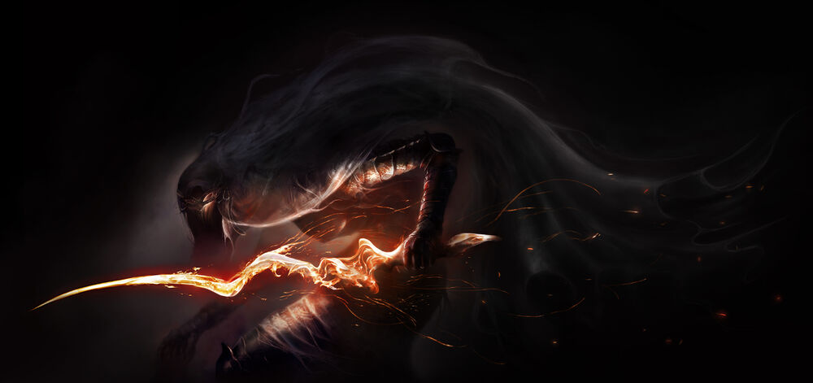

About The Dancer
This tall and swift bestial knight was not alway the monster you fight in DS3. Before Pontiff Sulyvahn came and conquered Irithyll of the Boreal Valley, she was thought to be a direct relative of the Anor Londo royal family, a maiden to Gwynevere. Pontiff forced her to become a dancer, she was then later exiled to a group known as the Outrider Knights. Like most of the Knights fighting under Sulyvahn she eventually devolved into that monster many of us recognise.
Concept Art by Knakveey, posted to the DarksoulsIII wiki
Dancer's Characteristics
- She is very talland lanky
- She stands on two legs (unlike most of pointiff's bestial knights)
- She has sleek armour
- She seems to have blades that almost mirror pointiff's
How to Best her in Combat
When fighting the Dancer it is easier to stay around her right leg as she only throws out a few combos with her right weapon in the first stage of the fight. The fist stage you want to avoid her grab at all costs. When you chip her health down to about half she will then pull her second sword out. The second stage she will get way more unpredictable, she will have long combos and will spin around, after those spin moves you strike. Her weaknesses are as follows:
- Strike damage
- Dark damage
- Bleed damage
Click Link Below for Boss Fight Video
Boss Fight Video